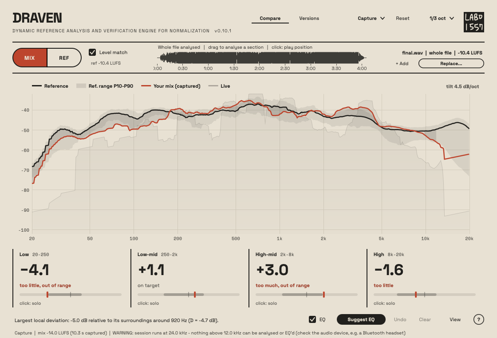

DRAVENLABO 1557
DRAVENは柳 東均の個人プロジェクトLABO 1557で制作したプラグインである。個人プロジェクトとして無償で配布しており、販売・寄付・広告はない。
DRAVEN（Dynamic Reference Analysis and Verification Engine for Normalization）は、自分のミックスをリファレンス曲（WAVまたはMP3、最大4曲）と比較するトーンバランス・アナライザー・プラグインである。周波数バランス曲線と4帯域の要約を表示し、グラフ上で直接編集するEQ（提案機能は任意）と、ラウドネスを揃えた状態でのA/B試聴を提供する[1]。ラウドネスの測定にはITU-R BS.1770のアルゴリズムを用いる[4]。DRAVENは差を示すのみであり、どの音が良いかを判断するものではないため、結果は必ず耳で確認する必要がある。

ダウンロード
インストーラーはGitHub Releasesに置かれている。登録、ライセンスキー、試用期間の制限はない。
| OS | ファイル | ダウンロード |
|---|---|---|
| Windows 10 / 11（64-bit） | DRAVEN-0.10.1-Windows-Setup.exe | Windows |
| macOS 11以降（Apple Silicon / Intel） | DRAVEN-0.10.1-macOS.pkg | macOS |
すべてのバージョンと変更履歴：github.com/dlrjtt1/draven-releases/releases
動作環境
- Windows：Windows 10または11（64-bit）、VST3ホスト（REAPER、Cubase、Studio One、Ableton Live、FL Studioなど）。
- macOS：macOS 11以降、Apple SiliconまたはIntel。VST3ホストおよびAudio Unitホスト（Logic Pro、GarageBand）。
- セッションのサンプルレートは44.1 kHz以上（48 kHz推奨）。
インストールと初回起動
現在配布しているインストーラーとプラグインはコード署名されていない。そのため、初回実行時にOSが警告を表示する。
Windows
DRAVEN-0.10.1-Windows-Setup.exeを実行する。- 「WindowsによってPCが保護されました」と表示された場合は、詳細情報を押してから実行を押す。
- インストーラーの案内に従う。スタンドアロン・アプリは任意である。
インストール先：VST3プラグインC:\Program Files\Common Files\VST3\DRAVEN.vst3、スタンドアロン・アプリC:\Program Files\LABO 1557\DRAVEN\DRAVEN.exe（選択した場合）。アンインストール：設定 › アプリ › DRAVEN › アンインストール。
macOS（未署名の警告への対処）
DRAVEN-0.10.1-macOS.pkgをダブルクリックする。- macOSが「開発元を検証できません」という警告を表示する。
- macOS 15（Sequoia）以降：完了を押し、システム設定 › プライバシーとセキュリティを開き、下方のDRAVENのメッセージの横にあるこのまま開くを押してパスワードで確認する。
- macOS 14以前：.pkgをControlキーを押しながらクリック（右クリック）して開くを選び、もう一度開くを押す。
- インストーラーの案内に従う。
インストール先：/Library/Audio/Plug-Ins/VST3/DRAVEN.vst3、/Library/Audio/Plug-Ins/Components/DRAVEN.component、/Applications/DRAVEN.app。DAWがプラグインを「壊れている」と表示する、または読み込まない場合は、ターミナルに次の1行を貼り付け（パスワードを求められる）、DAWを再起動する。
sudo xattr -dr com.apple.quarantine "/Library/Audio/Plug-Ins/VST3/DRAVEN.vst3" "/Library/Audio/Plug-Ins/Components/DRAVEN.component" "/Applications/DRAVEN.app"
アンインストール：上記の3項目を削除する。
初めて使うとき
- DAWにDRAVENが表示されない場合は、プラグインを再スキャンする（「LABO 1557」の「DRAVEN」として表示される）。
- DRAVENをマスターバスの最後のプラグインとして挿入する。
- Load reference…を押すか、WAV/MP3ファイルを波形の上にドラッグ＆ドロップする。波形をドラッグすると一部の区間（例：サビ）のみを分析できる。
- 曲を再生し、グラフと右側の4帯域メーターを見る（黒線がリファレンス、赤線が自分のミックス、破線がEQ）。
- MIX / REFでラウドネスを揃えたリファレンスと切り替えて聴く。すべてのショートカットは?で確認できる。
使用条件
草案・要検討 — 以下の文言は法律の専門家による検討を受けていない草案である。
- DRAVENは無償で配布される。個人的な用途と商業的な用途（例：DRAVENを用いて制作した音楽の発表・販売）のいずれにも無料で使用できる。
- DRAVEN自体を販売し、または有償で再配布してはならない。他の人に紹介する際は、インストーラーではなくこのページのリンクを共有されたい。
- DRAVENは「現状のまま（as is）」提供され、商品性、特定目的への適合性、誤りがないことを含め、明示・黙示を問わずいかなる保証も行わない。
- DRAVENの使用または使用不能により生じた損害（データ・作業の損失、システムの不具合など）について、開発者は法が許す最大限の範囲で責任を負わない。
- DRAVENに含まれるサードパーティ構成要素は、それぞれのライセンスに従う（下記のサードパーティ告知）。
- DRAVENにはインターネットに接続する機能がなく、利用者の情報を収集・送信しない。
サードパーティ告知
DRAVENは以下の構成要素を使用している。各ライセンスの原文はインストーラーに同梱のNOTICE.txtにある[1]。
| 構成要素 | 用途 | ライセンス |
|---|---|---|
| JUCE 8.0.15 | プラグイン・フレームワーク | JUCE 8 EULA (Starter)[2] |
| VST 3 SDK 3.8.0 | VST3プラグイン・インターフェース | MIT[3] |
| AudioUnitSDK | Audio Unit（macOS） | Apache 2.0 |
| dr_mp3 0.7.3, dr_wav 0.14.5 (dr_libs) | MP3・WAVの読み込み | Unlicense / MIT-0 |
| Space Grotesk, Space Mono | UIフォント | SIL OFL 1.1 |
| zlib, pnglib, jpeglib, FLAC, Ogg Vorbis, SheenBidi | JUCEに含まれ共にビルドされる構成要素 | zlib / IJG / BSD / Apache 2.0 |
VSTはSteinberg Media Technologies GmbHの商標である。
既知の制限
- インストーラーとプラグインはコード署名・公証されていない（上記のインストール案内を参照）。
- AAX（Pro Tools）形式は提供していない。
- セッションのサンプルレートが低い場合（Bluetoothヘッドセットのマイクが有効な場合など）、グラフが12 kHz付近で途切れる。オーディオデバイスを44.1/48 kHzに変更する。
- リファレンスの再生（REF）はオフラインのバウンス・レンダーには含まれない。
- REFの状態で別のリファレンスに切り替えると、準備の間（曲全体で約1–2秒）自分のミックスが一時的に聴こえた後、新しいリファレンスに切り替わる。
- 前回のセッション以降に移動したリファレンス・ファイルは赤色で表示され、クリックしてLocate…で指定し直す必要がある。
- サポートは個人で対応できる範囲に限られ、更新や回答は保証しない。不具合の報告はメールで受け付ける。
脚注
- ↑LABO 1557「DRAVEN」インストール案内およびサードパーティ告知（インストーラーに同梱の
NOTICE.txt）。 https://github.com/dlrjtt1/draven-releases/releases/tag/v0.10.1 - ↑JUCE「JUCE 8 End User Licence Agreement」。 https://juce.com/legal/juce-8-licence/
- ↑Steinberg Media Technologies「VST 3 License」。 https://steinbergmedia.github.io/vst3_dev_portal/pages/VST+3+Licensing/VST3+License
- ↑ITU-R「Recommendation BS.1770: Algorithms to measure audio programme loudness and true-peak audio level」。 https://www.itu.int/rec/R-REC-BS.1770
DRAVENLABO 1557
DRAVEN은 유동균의 개인 프로젝트 LABO 1557에서 만든 플러그인이다. 개인 프로젝트로서 무상으로 배포하며, 판매·후원·광고는 없다.
DRAVEN(Dynamic Reference Analysis and Verification Engine for Normalization)은 자신의 믹스를 레퍼런스 곡(WAV 또는 MP3, 최대 4곡)과 비교하는 톤 밸런스 분석 플러그인이다. 주파수 밸런스 곡선과 4대역 요약을 보여 주고, 그래프 위에서 직접 편집하는 EQ(제안 기능은 선택), 라우드니스를 맞춘 상태에서의 A/B 청취를 제공한다[1]. 라우드니스 측정에는 ITU-R BS.1770의 알고리즘을 쓴다[4]. DRAVEN은 차이를 보여 줄 뿐 어떤 소리가 좋은지를 판단하지 않으므로, 결과는 반드시 귀로 확인해야 한다.
다운로드
설치 파일은 GitHub Releases에 있다. 등록, 라이선스 키, 체험 기간 제한은 없다.
| 운영체제 | 파일 | 내려받기 |
|---|---|---|
| Windows 10 / 11 (64-bit) | DRAVEN-0.10.1-Windows-Setup.exe | Windows |
| macOS 11 이상 (Apple Silicon / Intel) | DRAVEN-0.10.1-macOS.pkg | macOS |
모든 버전과 변경 내역: github.com/dlrjtt1/draven-releases/releases
동작 환경
- Windows: Windows 10 또는 11(64-bit), VST3 호스트(REAPER, Cubase, Studio One, Ableton Live, FL Studio 등).
- macOS: macOS 11 이상, Apple Silicon 또는 Intel. VST3 호스트와 Audio Unit 호스트(Logic Pro, GarageBand).
- 세션 샘플레이트 44.1 kHz 이상(48 kHz 권장).
설치와 첫 실행
지금 배포하는 설치 파일과 플러그인은 코드 서명이 되어 있지 않다. 그래서 처음 실행할 때 운영체제가 경고를 띄운다.
Windows
DRAVEN-0.10.1-Windows-Setup.exe를 실행한다.- "Windows의 PC 보호" 창이 뜨면 추가 정보를 누른 뒤 실행을 누른다.
- 설치 안내를 따른다. 단독 실행 앱(Standalone)은 선택 사항이다.
설치 위치: VST3 플러그인 C:\Program Files\Common Files\VST3\DRAVEN.vst3, 단독 실행 앱 C:\Program Files\LABO 1557\DRAVEN\DRAVEN.exe(선택한 경우). 제거: 설정 › 앱 › DRAVEN › 제거.
macOS (미서명 경고 대처)
DRAVEN-0.10.1-macOS.pkg를 더블클릭한다.- macOS가 "개발자를 확인할 수 없다"는 경고를 띄운다.
- macOS 15(Sequoia) 이상: 완료를 누르고 시스템 설정 › 개인정보 보호 및 보안으로 가서, 아래쪽 DRAVEN 메시지 옆의 그래도 열기를 누르고 암호로 확인한다.
- macOS 14 이하: .pkg를 Control-클릭(오른쪽 클릭)하여 열기를 고르고, 다시 열기를 누른다.
- 설치 안내를 따른다.
설치 위치: /Library/Audio/Plug-Ins/VST3/DRAVEN.vst3, /Library/Audio/Plug-Ins/Components/DRAVEN.component, /Applications/DRAVEN.app. DAW가 플러그인이 "손상되었다"고 하거나 불러오지 않으면, 터미널에 아래 한 줄을 붙여 넣고(암호를 묻는다) DAW를 다시 시작한다.
sudo xattr -dr com.apple.quarantine "/Library/Audio/Plug-Ins/VST3/DRAVEN.vst3" "/Library/Audio/Plug-Ins/Components/DRAVEN.component" "/Applications/DRAVEN.app"
제거: 위 세 항목을 삭제한다.
처음 사용할 때
- DAW에 DRAVEN이 보이지 않으면 플러그인을 다시 스캔한다("LABO 1557"의 "DRAVEN"으로 표시된다).
- DRAVEN을 마스터 버스의 마지막 플러그인으로 넣는다.
- Load reference…를 누르거나 WAV/MP3 파일을 파형 위로 끌어다 놓는다. 파형을 드래그하면 일부 구간(예: 후렴)만 분석할 수 있다.
- 곡을 재생하고 그래프와 오른쪽의 4대역 미터를 본다(검은 선 레퍼런스, 빨간 선 내 믹스, 점선 EQ).
- MIX / REF로 라우드니스를 맞춘 레퍼런스와 번갈아 듣는다. 모든 단축키는 ?로 볼 수 있다.
사용 조건
초안 · 검토 필요 — 아래 문구는 법률 전문가의 검토를 받지 않은 초안이다.
- DRAVEN은 무상으로 배포된다. 개인적 용도와 상업적 용도(예: DRAVEN을 쓰며 만든 음악의 발표·판매) 모두에 무료로 사용할 수 있다.
- DRAVEN 자체를 판매하거나 유료로 재배포해서는 안 된다. 다른 사람에게 알릴 때는 설치 파일 대신 이 페이지의 링크를 공유해 주기 바란다.
- DRAVEN은 "있는 그대로(as is)" 제공되며, 상품성, 특정 목적에의 적합성, 오류가 없음 등 어떠한 명시적·묵시적 보증도 하지 않는다.
- DRAVEN의 사용 또는 사용 불능으로 생긴 손해(데이터·작업물 손실, 시스템 문제 등)에 대해 개발자는 법이 허용하는 최대 범위에서 책임을 지지 않는다.
- DRAVEN에 포함된 서드파티 구성요소는 각자의 라이선스를 따른다(아래 서드파티 고지).
- DRAVEN에는 인터넷에 연결하는 기능이 없으며, 사용자 정보를 수집하거나 전송하지 않는다.
서드파티 고지
DRAVEN은 아래 구성요소를 사용한다. 각 라이선스 원문은 설치 파일에 포함된 NOTICE.txt에 있다[1].
| 구성요소 | 용도 | 라이선스 |
|---|---|---|
| JUCE 8.0.15 | 플러그인 프레임워크 | JUCE 8 EULA (Starter)[2] |
| VST 3 SDK 3.8.0 | VST3 플러그인 인터페이스 | MIT[3] |
| AudioUnitSDK | Audio Unit(macOS) | Apache 2.0 |
| dr_mp3 0.7.3, dr_wav 0.14.5 (dr_libs) | MP3·WAV 읽기 | Unlicense / MIT-0 |
| Space Grotesk, Space Mono | UI 글꼴 | SIL OFL 1.1 |
| zlib, pnglib, jpeglib, FLAC, Ogg Vorbis, SheenBidi | JUCE에 포함되어 함께 빌드되는 구성요소 | zlib / IJG / BSD / Apache 2.0 |
VST는 Steinberg Media Technologies GmbH의 상표이다.
알려진 제한
- 설치 파일과 플러그인은 코드 서명·공증이 되어 있지 않다(위 설치 안내 참조).
- AAX(Pro Tools) 형식은 제공하지 않는다.
- 세션 샘플레이트가 낮으면(블루투스 헤드셋의 마이크가 켜진 경우 등) 그래프가 12 kHz 부근에서 끊긴다. 오디오 장치를 44.1/48 kHz로 바꾼다.
- 레퍼런스 재생(REF)은 오프라인 바운스·렌더에 포함되지 않는다.
- REF 상태에서 다른 레퍼런스로 바꾸면, 준비되는 동안(곡 전체 기준 약 1–2초) 내 믹스가 잠깐 들린 뒤 새 레퍼런스로 바뀐다.
- 마지막 세션 이후 옮겨진 레퍼런스 파일은 빨간색으로 표시되며, 클릭해 Locate…로 다시 지정해야 한다.
- 지원은 개인이 할 수 있는 범위에서만 가능하며, 업데이트나 답변을 보장하지 않는다. 문제 보고는 이메일로 받는다.
각주
- ↑LABO 1557, 「DRAVEN」 설치 안내 및 서드파티 고지(설치 파일에 포함된
NOTICE.txt). https://github.com/dlrjtt1/draven-releases/releases/tag/v0.10.1 - ↑JUCE, 「JUCE 8 End User Licence Agreement」. https://juce.com/legal/juce-8-licence/
- ↑Steinberg Media Technologies, 「VST 3 License」. https://steinbergmedia.github.io/vst3_dev_portal/pages/VST+3+Licensing/VST3+License
- ↑ITU-R, 「Recommendation BS.1770: Algorithms to measure audio programme loudness and true-peak audio level」. https://www.itu.int/rec/R-REC-BS.1770
DRAVENLABO 1557
- Article
DRAVEN is a plug-in made in LABO 1557, Dong-Gyun You's personal project. It is distributed free of charge as a personal project; there are no sales, donations or advertising.
DRAVEN (Dynamic Reference Analysis and Verification Engine for Normalization) is a tonal-balance analyser plug-in that compares your mix with reference tracks (WAV or MP3, up to four). It shows the frequency balance and a four-band summary, an EQ you edit on the graph (with an optional suggestion), and A/B listening at matched loudness[1]. Loudness is measured with the algorithm of ITU-R BS.1770[4]. DRAVEN shows differences; it does not decide what sounds good, so always check by ear.
Download
The installers are on GitHub Releases. There is no registration, no licence key and no trial limit.
| OS | File | Download |
|---|---|---|
| Windows 10 / 11 (64-bit) | DRAVEN-0.10.1-Windows-Setup.exe | Windows |
| macOS 11 or later (Apple Silicon / Intel) | DRAVEN-0.10.1-macOS.pkg | macOS |
All versions and release notes: github.com/dlrjtt1/draven-releases/releases
Requirements
- Windows: Windows 10 or 11 (64-bit); any VST3 host (REAPER, Cubase, Studio One, Ableton Live, FL Studio, …).
- macOS: macOS 11 or later, Apple Silicon or Intel; VST3 hosts and Audio Unit hosts (Logic Pro, GarageBand).
- Session sample rate 44.1 kHz or higher (48 kHz recommended).
Installation and first launch
The installers and the plug-in are not code-signed yet, so the operating system shows a warning the first time.
Windows
- Run
DRAVEN-0.10.1-Windows-Setup.exe. - If Windows shows "Windows protected your PC", click More info, then Run anyway.
- Follow the installer. The standalone app is optional.
Installed to: VST3 plug-in C:\Program Files\Common Files\VST3\DRAVEN.vst3; standalone C:\Program Files\LABO 1557\DRAVEN\DRAVEN.exe (if chosen). Uninstall: Settings › Apps › DRAVEN › Uninstall.
macOS (unsigned-installer warning)
- Double-click
DRAVEN-0.10.1-macOS.pkg. - macOS says it cannot verify the developer.
- macOS 15 (Sequoia) or later: click Done, open System Settings › Privacy & Security, scroll down, click Open Anyway next to the DRAVEN message and confirm with your password.
- macOS 14 or earlier: Control-click (right-click) the .pkg, choose Open, then Open again.
- Follow the installer.
Installed to: /Library/Audio/Plug-Ins/VST3/DRAVEN.vst3, /Library/Audio/Plug-Ins/Components/DRAVEN.component, /Applications/DRAVEN.app. If your DAW says the plug-in is "damaged" or will not load it, paste this line into Terminal (it asks for your password), then restart the DAW:
sudo xattr -dr com.apple.quarantine "/Library/Audio/Plug-Ins/VST3/DRAVEN.vst3" "/Library/Audio/Plug-Ins/Components/DRAVEN.component" "/Applications/DRAVEN.app"
Uninstall: delete the three items above.
First use
- If DRAVEN does not appear in your DAW, rescan plug-ins (it is listed as "DRAVEN" by "LABO 1557").
- Insert DRAVEN as the last plug-in on your master bus.
- Click Load reference… or drag a WAV/MP3 file onto the waveform. Drag on the waveform to analyse only a section (e.g. a chorus).
- Play your song and read the graph and the four band meters on the right (black: reference; red: your mix; dashed: EQ).
- Use MIX / REF to switch to the reference at matched loudness. Press ? for all shortcuts.
Terms of use
Draft · review needed — the wording below has not been reviewed by a legal professional.
- DRAVEN is distributed free of charge. You may use it free of charge for personal and commercial purposes (for example, releasing or selling music you made while using DRAVEN).
- You may not sell DRAVEN itself or redistribute it for a fee. When telling others about it, please share a link to this page rather than the installer file.
- DRAVEN is provided "as is", without warranty of any kind, express or implied, including merchantability, fitness for a particular purpose and freedom from errors.
- To the maximum extent permitted by law, the developer is not liable for any damage arising from the use of, or inability to use, DRAVEN (including loss of data or work and system problems).
- Third-party components included in DRAVEN are subject to their own licences (see Third-party notices below).
- DRAVEN has no function that connects to the internet and does not collect or transmit user information.
Third-party notices
DRAVEN uses the components below. The full licence texts are in NOTICE.txt, included with the installer[1].
| Component | Use | Licence |
|---|---|---|
| JUCE 8.0.15 | Plug-in framework | JUCE 8 EULA (Starter)[2] |
| VST 3 SDK 3.8.0 | VST3 plug-in interface | MIT[3] |
| AudioUnitSDK | Audio Unit (macOS) | Apache 2.0 |
| dr_mp3 0.7.3, dr_wav 0.14.5 (dr_libs) | Reading MP3 and WAV | Unlicense / MIT-0 |
| Space Grotesk, Space Mono | UI fonts | SIL OFL 1.1 |
| zlib, pnglib, jpeglib, FLAC, Ogg Vorbis, SheenBidi | Components included in JUCE and built with it | zlib / IJG / BSD / Apache 2.0 |
VST is a trademark of Steinberg Media Technologies GmbH.
Known limitations
- The installers and the plug-in are not code-signed or notarised (see the installation notes above).
- No AAX (Pro Tools) format.
- At a low session sample rate (often a Bluetooth headset with its microphone active), the graph stops around 12 kHz. Switch the audio device to 44.1/48 kHz.
- Reference playback (REF) is never included in an offline bounce/render.
- Switching to another reference while on REF: you hear your mix for a moment (about 1–2 s for a full song) while it is prepared, then the new reference fades in.
- A reference file moved since the last session is shown in red; click it and choose Locate….
- Support is limited to what one person can offer; updates and replies are not guaranteed. Please report problems by e-mail.
References
- ↑LABO 1557, "DRAVEN" installation notes and third-party notices (
NOTICE.txtin the installer). https://github.com/dlrjtt1/draven-releases/releases/tag/v0.10.1 - ↑JUCE, "JUCE 8 End User Licence Agreement". https://juce.com/legal/juce-8-licence/
- ↑Steinberg Media Technologies, "VST 3 License". https://steinbergmedia.github.io/vst3_dev_portal/pages/VST+3+Licensing/VST3+License
- ↑ITU-R, "Recommendation BS.1770: Algorithms to measure audio programme loudness and true-peak audio level". https://www.itu.int/rec/R-REC-BS.1770